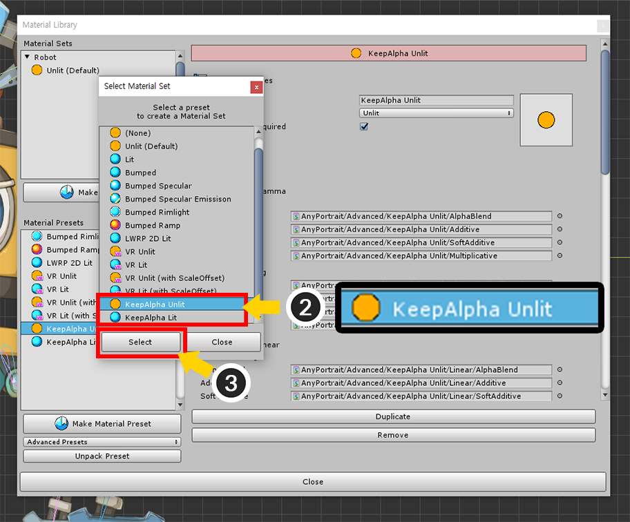

AnyPortrait > 메뉴얼 > 렌더 텍스쳐로 렌더링하기
렌더 텍스쳐로 렌더링하기
1.2.0
게임 화면을 별도의 텍스쳐로 저장하는 기법을 이용하면 게임 내에서 간판이나 거울 등을 표현할 수 있습니다.
캐릭터를 게임의 HUD에 출력하는 것도 가능하며, 그 외의 많은 활용 방법이 있습니다.
이 기법은 카메라의 Target Texture 속성에 렌더 텍스쳐(Render Texture)를 지정하는 것으로 간단히 구현할 수 있습니다.
AnyPortrait는 유니티의 렌더링 컴포넌트인 Mesh Renderer를 사용하므로, 일반적으로는 문제없이 이 기법이 적용될 수 있습니다.
그렇지만 사용자분들의 피드백을 바탕으로 특수한 상황에서 발생하는 문제점에 대해서 v1.2.0에서 개선되었습니다.
이 페이지에서는 렌더 텍스쳐로 렌더링하는 방법과 몇가지 문제점과 해결 방법을 소개합니다.
렌더 텍스쳐를 이용하여 렌더링하기

렌더 텍스쳐를 이용한 렌더링을 해보는 씬을 구성했습니다.
위 씬은 2개의 카메라가 배치되어 있으며, "AnyPortrait로 제작된 캐릭터", "Sphere 메시", "렌더 텍스쳐가 적용된 Quad 메시"가 배치되었습니다.

일반적으로 렌더 텍스쳐를 이용하는 방법은 위와 같습니다.
첫번째 카메라에서 렌더 텍스쳐를 대상으로 오브젝트들을 렌더링합니다.
두번째 카메라가 화면을 대상으로 렌더 텍스쳐를 포함한 다른 오브젝트들을 렌더링합니다.
이 방식으로 렌더링하도록 설정해봅시다.

(1) 첫번째 카메라를 선택합니다.
(2) Culling Mask를 Everything에서 Default로 변경합니다. 이제 Default 레이어의 오브젝트들만 이 카메라에서 렌더링됩니다.
(3) Depth를 -1로 설정한 상태에서 Target Texture에 렌더 텍스쳐(Render Texture) 에셋을 지정합니다.
렌더 텍스쳐은 미리 에셋 폴더에 생성해두어야 합니다.

렌더 텍스쳐 에셋의 속성입니다.
플랫폼마다 다소 차이가 있을 수 있습니다.
해상도를 적절히 조절하는 것을 권장합니다.

(1) 첫번째 카메라에 렌더링 되는 오브젝트들을 선택하고,
(2) Layer가 Default인지 확인합니다.
(1) 두번째 카메라를 선택합니다.
(2) Culling Mask를 UI로 변경합니다.
이제 레이어가 UI인 오브젝트만 렌더링되며, 여기서는 "렌더 텍스쳐가 적용된 Quad 메시"가 여기에 해당됩니다.
(3) Depth를 -1보다 큰 값으로 지정합니다. 여기서는 1로 설정했습니다.
(1) 두번째 카메라에 의해 렌더링 될 Quad 메시를 선택합니다.
(2) Layer를 UI로 변경합니다.
(3) 재질의 텍스쳐를 렌더 텍스쳐로 변경합니다. 이때의 렌더 텍스쳐는 첫번째 카메라에 적용된 것과 동일해야합니다.

게임을 실행하면 AnyPortrait로 제작된 캐릭터를 포함하여 렌더 텍스쳐가 성공적으로 작성되어 렌더링되는 것을 볼 수 있습니다.
반투명, 투명한 배경의 렌더 텍스쳐를 대상으로 렌더링하기
렌더 텍스쳐를 반투명하거나 투명하게 만들 수 있습니다.
카메라의 배경 속성을 투명하게 만들면, 렌더 텍스쳐의 배경도 동일하게 투명하게 바뀝니다.
이를 이용하면 배경을 제외하고 캐릭터만 렌더링하는 것이 가능합니다.
그러나 AnyPortrait의 기본 재질을 이용하면 렌더링 문제가 발생합니다.
아래의 설명을 통해서 발생되는 렌더링 문제와 해결 방법을 확인해보세요.

(1) 첫번째 카메라를 선택하고 Clear Flags를 Solid Color로 설정한 상태에서 Background 색상을 선택합니다.
(2) 배경색의 Alpha 채널을 변경합니다.
(3) 렌더 텍스쳐의 배경이 점점 투명해지는 것을 볼 수 있습니다.
이 상태에서 렌더 텍스쳐에 렌더링되는 AnyPortrait의 캐릭터도 동일하게 투명해지는 문제를 볼 수 있습니다.

배경색에 따라서 AnyPortrait의 캐릭터가 어떻게 렌더링되는지 비교해봅시다.
배경이 투명해지면 AnyPortrait의 캐릭터도 마찬가지로 투명해지는 반면, 옆에 배치된 녹색의 Sphere는 별다른 변화가 없습니다.
정상적인 경우에는 배경의 투명도에 관계없이 렌더링이 되어야 할 것입니다.
이것은 유니티의 쉐이더의 속성과 관련된 문제이며, 특히 Surface Shader로 작성된 경우 발생할 수 있는 현상입니다.
따라서 이 문제는 다른 쉐이더를 사용하는 재질을 적용하는 것으로서 해결할 수 있습니다.
AnyPortrait 에디터를 엽니다.
(1) Material Library 버튼을 누릅니다.
(2) KeepAlpha Presets를 선택합니다.

(1) Unpack Preset 버튼을 누릅니다.
새로운 재질 프리셋이 설치되면서 재질 라이브러리가 종료됩니다.
재질 라이브러리를 다시 엽니다.
(2) 2개의 재질 프리셋 (KeepAlpha Unlit, KeepAlpha Lit)이 추가되었습니다.
Keep Alpha 프리셋은 일반적인 Surface Shader에 기존의 alpha 파라미터 대신 keepalpha 파라미터를 추가한 쉐이더들로 구성됩니다.
(1) Make Material Set 버튼을 누릅니다.

(2) KeepAlpha Unlit이나 KeepAlpha Lit 프리셋을 선택합니다.
이 씬에는 빛이 없으므로 KeepAlpha Unlit 프리셋을 선택합니다.
(3) Select 버튼을 누릅니다.
(1) 새로 생성된 재질 세트를 선택합니다.
(2) Default Material 버튼을 눌러서 기본 재질로 선택합니다.

모든 과정이 끝나면 Bake를 실행합니다.

이제 배경이 투명해져도 캐릭터는 정상적으로 렌더링됩니다.
렌더 텍스쳐를 포함하여 동시에 렌더링하기
화면에 렌더링할 때 렌더 텍스쳐는 물론이고, 캐릭터 원본도 같이 렌더링해야하는 경우도 있습니다.
기본적으로 이 방법은 "다수의 카메라로 렌더링하기"와 동일합니다.
따라서 VR 렌더링에서 발생하는 문제와 유사한 문제가 여기서도 발생합니다.
어떤 문제가 발생하는지, 그리고 어떻게 해결하는지를 아래의 설명을 통해서 확인해봅시다.

(1) 화면에 렌더링을 하는 두번째 카메라를 선택합니다.
(2) Culling Mask 옵션을 변경합니다.
(3) 기존의 UI 레이어를 선택한 상태에서 추가적으로 Default 레이어를 선택합니다.
이제 Default 레이어의 오브젝트들도 화면에 렌더링될 것입니다.
게임을 실행하면 렌더 텍스쳐에서도 렌더링이 되면서,
동시에 화면에 원래의 캐릭터와 다른 오브젝트들이 동시에 렌더링된 것을 볼 수 있습니다.
그러나 이 경우에 클리핑 마스크가 적용된 부분이 이상하게 렌더링된 것을 볼 수 있습니다.
(이것은 렌더 텍스쳐에서 이상하게 보여질 수도 있으며, 반대로 원본이 이상하게 보여질 수도 있습니다.)

이 문제는 VR 렌더링에서 볼 수 있는 문제와 유사하므로, 해결 방법도 동일합니다. (관련 페이지)
(1) AnyPortrait 에디터를 열고 Bake 버튼을 누릅니다.
(2) Setting 탭을 누릅니다.
(3) VR Option의 값을 Multiple Cameras로 변경합니다.

이제 렌더 텍스쳐와 원본의 캐릭터가 모두 정상적으로 렌더링되는 것을 볼 수 있습니다.
하지만 여러개의 카메라를 이용하여 렌더링을 하는 경우 클리핑 마스크의 품질 보정이 되지 않을 수 있기 때문에,
위 화면처럼 클리핑이 되는 영역이 깔끔하지 않게 렌더링 될 수 있습니다. (관련 페이지)

클리핑 마스크의 해상도를 증가시켜서 이 문제를 해결할 수 있습니다.
(1) 메시 그룹을 선택합니다.
(2) Setting 탭을 선택합니다.
(3) 클리핑 마스크가 되는 메시를 선택합니다. (클리핑 되는 메시가 아닙니다.)
(4) Mask Texture Size의 값을 증가시킵니다.

Bake를 하고 게임을 실행하면, 클리핑 마스크의 문제까지 해결된 것을 볼 수 있습니다.
Keep Alpha 재질의 색상 문제 해결하기
배경이 투명한 렌더 텍스쳐를 만들기 위해서 Keep Alpha 재질을 이용하면 색상이 이상하게 나타나는 경우가 있습니다.
이미지가 반투명한 경우 이 문제를 볼 수 있습니다.
만약 반투명한 이미지가 불투명한 이미지의 위에 위치한다면 이 문제를 아래의 방법으로 해결할 수 있습니다.
불투명한 보라색 메시와 반투명한 파란 메시를 위와 같이 준비했습니다.
투명한 배경의 렌더 텍스쳐를 만들 것이므로 위의 설명처럼 KeepAlpha Unlit 재질을 적용했습니다.

위와 같이 씬을 구성했습니다.
(1) 왼쪽은 AnyPortrait로 제작한 원본입니다.
(2) 오른쪽은 렌더 텍스쳐가 적용된 사각 메시입니다.
(1) 렌더 텍스쳐를 만드는 카메라를 선택합니다.
(2) Background 속성을 선택하고, (3) 배경 색상을 점점 투명하게 변경해봅니다.
(4) 렌더 텍스쳐의 배경 색상이 투명하게 바뀌는 것을 볼 수 있으며, 현재는 원본과 크게 다르지 않아보입니다.

문제는 렌더 텍스쳐의 배경이 아닌 최종적으로 렌더링되는 카메라의 배경 색상이 회색이 아닌 경우입니다.
(1) 화면을 렌더링하는 카메라를 선택합니다.
(2) 배경 색상을 회색이 아닌 색으로 변경해봅시다.
(3) 렌더 텍스쳐 상에서 메시의 반투명한 부분의 색상이 이상하게 바뀌는 것을 볼 수 있습니다.

(1) 만약 배경 색상을 흰색으로 바꾼다면,
(2) 렌더 텍스쳐 상에서 메시의 반투명한 부분이 지나치게 밝아지는 것을 볼 수 있습니다.
이 문제는 불투명한 메시가 뒤에 있음에도 나타나는 것이 특징입니다.

앞의 3가지 경우를 모아보았습니다.
렌더 텍스쳐 상에서 메시의 색상이 왜곡되는 것이 확연하게 보입니다.
이 문제는 Keep Alpha 재질의 문제이므로, 해당 메시의 재질을 원래의 재질로 변경할 필요가 있습니다.
AnyPortrait 에디터를 열고 메시 그룹의 Setting 탭이 선택된 상태에서 해당 메시의 재질을 변경합니다.
(1) 반투명한 메시를 선택합니다.
(2) 재질 설정에서 Use Default Material Set 버튼을 눌러서 OFF 상태로 변경합니

(1) Change 버튼을 누릅니다.
(2) 기본 재질인 Unlit (Default)를 선택합니다.
(3) Select 버튼을 눌러서 적용합니다.

Bake를 하고 다시 유니티에서 렌더링을 하면 위와 같이 문제가 해결된 것을 볼 수 있습니다.
이 해결법은 불투명한 메시가 뒤에 있는 경우, 렌더 텍스쳐의 배경을 투명하게 만들고자 할 때 유효합니다.